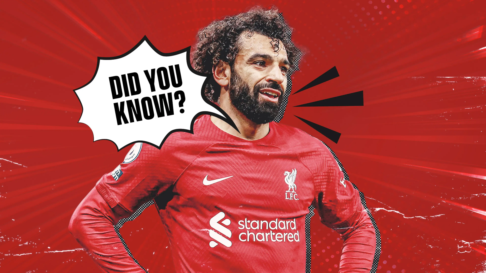
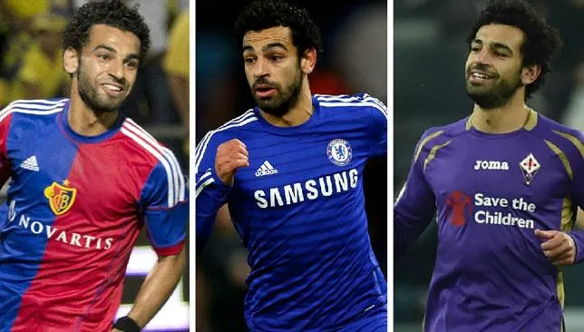

Profil Singkat

Mohamed Salah adalah pesepakbola Mesir yang saat ini bermain untuk Liverpool di Liga Primer Inggris.
Dia lahir pada 15 Juni 1992 di Nagrig, Mesir, lalu memulai karier profesional di Liga Primer Mesir bersama Al Mokawloon pada 2010.
Salah diperhitungkan sebagai salah satu pemain terbaik dunia dan dikenal karena kecepatan, kegesitan, dan kemampuannya dalam mencetak gol.
Dia telah memenangkan berbagai penghargaan selama berkarier, termasuk Sepatu Emas Liga Primer, Pemain Terbaik PFA dan juga FWA.
Dia juga dipandang sebagai salah satu pemain terbaik yang pernah dimiliki Liverpool dan jadi bagian penting saat membantu The Reds memenangkan trofi Liga Primer pertama di 2020
dan gelar Liga Champions kelima klub pada 2019, setahun setelah mereka tumbang dari Real Madrid di final.
Karir

Mohamed Salah memulai karier seniornya di sepak bola pada tahun 2010 di sebuah klub lokal Mesir bernama Al Mokawloon. 2 tahun kemudian,
Salah pergi dari Afrika untuk mengejar mimpi sepak bolanya di tanah Eropa, yang mana masih ia tekuni sampai saat ini.
Al Mokawloon (2010-2012)
Salah pertama kali bermain untuk Al Mokawloon pada usia 14 tahun setelah terjaring oleh seorang pencari bakat. Setelah bergabung, Salah sering harus melewatkan sekolah untuk berlatih di Al Mokawloon,
di mana ia menghabiskan waktu 3 jam perjalanan. Salah akhirnya dipromosikan ke tingkat senior oleh pelatih Al Mokawloon, Mohamed Radwan, pada usia 15 tahun.
Setelah bermain bersama Al Mokawloon, Salah akhirnya menjadi anggota reguler di tim utama tersebut. Sayangnya, meskipun menjadi anggota reguler, Salah masih kesulitan untuk mencetak angka.
Gol pertamanya terjadi pada 25 Desember 2010 dengan hasil seri saat melawan Al Ahly.
Basel (2012-2013)
Basel mengundang Salah untuk tinggal di Basel untuk melakukan pelatihan selama seminggu. Selang sebulan kemudian,
pada 10 April 2012, telah diumumkan bahwa Salah menandatangani kontrak dengan Basel untuk kontrak selama 4 tahun.
Di musim Liga Super Swiss tahun 2013–2014, Salah menjadi tim Basel yang memenangkan Uhrencup tahun 2013. Di lingkup domestik,
Salah terus tampil di bawah bendera Basel dengan mencetak 4 gol dalam 18 pertandingan.
Chelsea (2013-2016)
Salah memulai debutnya di Chelsea pada 8 Februari 2014 saat melawan Newcastle United di Liga Inggris. Ia masuk sebagai pemain pengganti. Selanjutnya,
ia mencetak gol pertamanya untuk Chelsea saat melawan Arsenal, yang berujung pada kemenangan Chelsea.
Pada 2 Februari 2015, Salah dikonfirmasi akan bergabung dengan klub asal Italia, Fiorentina, dalam pinjaman selama 18 bulan hingga akhir musim 2015-2016.
Debut pertamanya dengan Fiorentina terjadi saat melawan Atalanta sebagai pemain pengganti.
Roma (2016-2017)
Pada 3 Agustus 2016, Salah bergabung dengan Roma dalam pinjaman selama satu musim, dengan opsi untuk membuat perjanjian perpindahan permanen.
Setelah bermain sebagai pemain pinjaman, Salah diumumkan telah menandatangani kontrak dengan Roma dalam perjanjian permanen.
Pada musim tersebut, Roma mengakhiri musim di posisi kedua, hanya berbeda 4 poin dari sang juara Juventus.
Salah telah mencetak 19 gol di semua pertandingan untuk Roma.
Liverpool (2017-Sekarang)
Pada 22 Juni 2017, Salah menyetujui transfer ke Liverpool dalam kontrak jangka panjang senilai £36,5 juta, yang mana menjadi rekor biaya transfer Liverpool pada saat itu.
Ia resmi bergabung pada 1 Juli 2017 dan menjadi pemain Mesir pertama di Liverpool.
Di musim 2018-2019, Salah berhasil mencetak 50 gol dalam 65 pertandingan. Ia pun menjadi pemain tercepat dalam sejarah Liverpool yang berhasil mencapai setengah dari total rekor sebanyak 100 gol.
Ia menyelesaikan rekor 100 gol pada tahun 2020, di mana ia menjadi pencetak 100 gol tercepat ketiga dalam sejarah Liverpool.
Sampai saat ini, Salah terus memecahkan berbagai rekor di Liverpool ataupun liga sepak bola Eropa. Pada 1 Juli 2022, Salah meneruskan jejak karier luar biasanya di Liverpool dengan menandatangani kontrak baru untuk periode 3 tahun. Ia menjadi pemain dengan gaji termahal di Liverpool,
yaitu senilai £350.000 per minggu sampai tahun 2025.